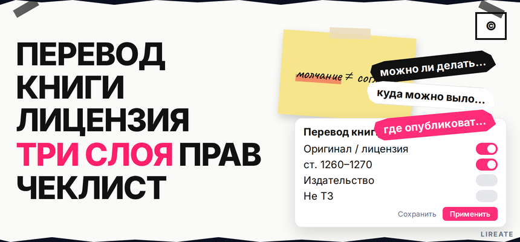
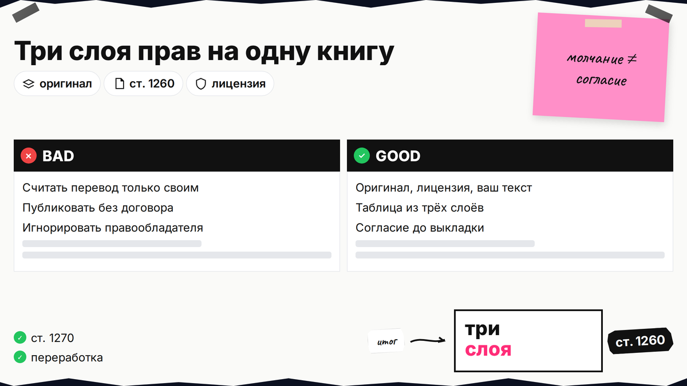
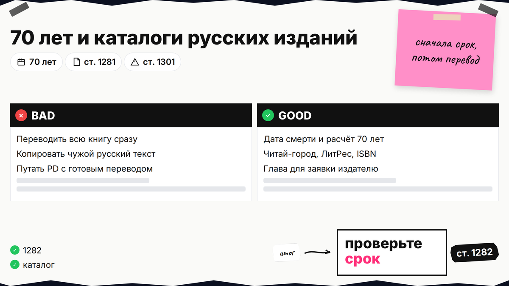
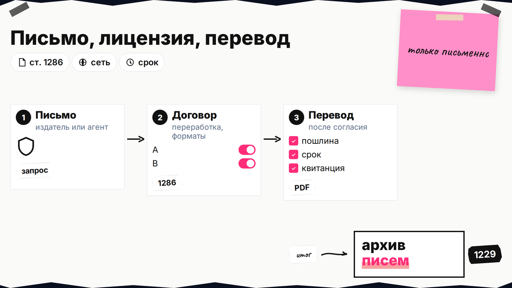

Вы перевели зарубежную книгу и ищете, куда выложить текст, а в поиске по запросу "можно ли делать любительский перевод" встречаются статьи про перевод денег. Здесь только литературный перевод: по ГК РФ это использование чужого произведения, и блог с указанием автора согласие не заменяет. Ниже вы отделите личный архив от публикации, проверите оригинал и лицензию и соберёте заявку для издательства без путаницы с товарным знаком.

TL;DR / Быстрый инсайт: На книгу смотрят три слоя: оригинал (охрана или общественное достояние), лицензия на перевод у правообладателя и ваш текст (ст. 1260). Публикация без договора - ст. 1270; молчание автора не согласие (ст. 1229). Только для себя без выкладки - ст. 1273. Не юруслуга (23.10.2026).
Любительский перевод - перенос текста без издательского контракта. Нейросеть, которая "переводит PDF", не даёт права публиковать охраняемый оригинал. Издательство, как правило, не стартует проект без договора с правообладателем книги (практика издательств). Зафиксируйте объект: автор, год, цель (диск, сеть, заявка в издательство) заранее. Если в Метрике или в поиске вы видели советы про НДФЛ и СБП, это другая тема - для книги смотрите ГК РФ о произведениях, а не валютный контроль.

AP - запрет копировать чужое произведение без основания. Перевод - переработка (пп. 9 п. 2 ст. 1270); некоммерческий блог согласие не заменяет.
| Слой | Кто решает | Что проверить |
|---|---|---|
| Оригинал | Автор, наследники, издательство | 70 лет, русское издание |
| Лицензия на перевод | Правообладатель оригинала | Договор, территория, e-book/печать |
| Текст переводчика | Вы | Договор с издателем, имя в книге |
Права на ваш перевод есть, но их нельзя реализовать в ущерб оригиналу (п. 3–4 ст. 1260). Делайте: три поля в таблице. Не делайте: считать перевод "своим" без вопроса к правообладателю охраняемой книги.

Срок - жизнь автора плюс 70 лет с 1 января года после смерти (ст. 1281), затем общественное достояние (ст. 1282). Для живого автора публикация без лицензии грозит компенсацией от 10 000 до 10 000 000 руб. (ст. 1301).
Ищите готовый перевод на Читай-город, ЛитРес, в библиотечном каталоге. Занятые права на русский текст обычно блокируют второй полный перевод. Бернская конвенция ставит переводы наравне с оригиналом, но не отменяет согласие автора исходного произведения (справка для переводчиков).
Делайте: дату смерти автора и ISBN. Не делайте: переводить всю книгу до проверки - для издателя хватит согласованной главы (практика заявок).

Маршрут: книга → издательство/агент → письмо → принципиальное согласие → договор → полный перевод
Контакт - автор, наследники, издатель оригинала или агент. Права в РФ часто у агентств вроде "Права и переводы" или "Синопсис" (обзор); ищите представителя на сайте издательства. В переписке уточните, свободны ли права на русский язык: иногда контракт с одним издателем уже закрывает перевод на десятилетия вперёд.
Лицензия только в письменной форме (ст. 1286): перевод, сеть, печать, аудио, территория, срок, гонорар. Без слова "переработка" договор могут оспорить (производные произведения).
Шаблон письма правообладателю
Тема: лицензия на перевод [книга] на русский
Здравствуйте. Прошу условия лицензии на перевод [автор, название, ISBN] на русский.
Цель: [сайт / e-book / печать в РФ]. Объём: [глава / полный текст].
Готов(а) прислать резюме и фрагмент после ваших требований.
[ФИО, email]
Делайте: хранить переписку и PDF. Не делайте: выкладывать текст при молчании автора (ст. 1229).
Личное чтение без доступа другим - ст. 1273. Открытый пост, канал или платная подписка - уже публикация. Договор переводчика с издателем строите по тем же правилам, что и любую лицензию на текст: кто владеет исключительным правом на перевод, кто правит стиль, как делится гонорар (права переводчика).
Делайте: заявку с главой и письмом правообладателя. Не делайте: полный перевод в сеть "для рекламы издателю" без разрешения.
Крупные fan-площадки требуют разрешения автора на переводы (практика публикации переводов). Публичная выкладка без лицензии часто оспаривается (обзор). При претензии помогает схема фиксации ответа из гайда по досудебному письму.
В общественном достоянии свободен оригинал, не чужой готовый перевод с сайта. Делайте свой перевод с языка оригинала; срок 70 лет согласуется с логикой проверки общественного достояния для других объектов AP (справка ВШЭ). Даже классика может иметь охраняемый современный перевод: перед выкладкой проверьте, чей именно файл вы берёте.
Делайте: лицензию до публикации. Не делайте: копировать "народную" сказку с немецкого форума вместо перевода с оригинала. Машинный перевод с последующей выкладкой файла для охраняемой книги юридически не отличается от ручного: нужно согласие на использование оригинала.
Запрос "зарегистрировать перевод сказки" часто про ТЗ, не про книгу. AP на текст возникает при создании (ст. 1259). Депонирование фиксирует дату файла, но не заменяет лицензию и не доказывает авторство в споре так же, как подписанный договор. РАО при переводе охраняемого оригинала требует разрешения правообладателя. Обложку оформляйте по договору с автором графики.
Делайте: ТЗ для названия серии, договор AP для текста. Не делайте: считать свидетельство Роспатента на знак разрешением на нелицензионный перевод. Депонирование в коммерческой организации фиксирует дату сдачи файла, но суд не примет его вместо лицензии на чужой оригинал - храните оба типа документов раздельно.
Лирейт помогает с договорами и защитой ИС; при риске по ст. 1301 подключайте юриста до выкладки. Для грантовой поддержки переводов смотрите программы профильных институтов (обзор маршрутов издателя) - это отдельный путь, не замена лицензии на охраняемый оригинал.
Отправьте запрос правообладателю, пройдите чек-лист и не публикуйте полный файл при охраняемом оригинале без ответа. Не переводите всю охраняемую книгу "про запас": сначала согласуйте пробный объём и договор, затем закрывайте тираж. Для издательства приложите синопсис и первую главу. При споре сохраните переписку и основания. За поддержкой по договорам обращайтесь к специалистам Лирейт на сайте.
Материал проверен: редакция Лирейт, практика по авторскому праву.
Достоверность данных: ст. 1229, 1260, 1270, 1273, 1281–1282, 1286, 1301 ГК РФ сверены с zakonrf.info на 23.10.2026; Вордстат в среде подготовки не запрашивался.
Для личного чтения без доступа другим - ст. 1273. Открытый блог, канал или фан-сайт требуют лицензии на охраняемую книгу.
Имя не заменяет согласие. Без договора возможны удаление и компенсация по ст. 1301 ГК РФ.
Нет: свободен оригинал. Нужен свой перевод или лицензия на чужой текст.
Для литературного текста регистрация AP не обязательна. Роспатент ведёт реестр товарных знаков на название или логотип серии; депонирование и учёт в РАО решают другие задачи и не заменяют лицензию на перевод охраняемого оригинала.
С издательства оригинала или агента из выходных данных; для РФ - российский представитель прав.
Правила площадки требуют разрешения; молчание не согласие по ст. 1229.
Вы - автор производного произведения по ст. 1260, если переводили с оригинала, а не копировали чужой файл.